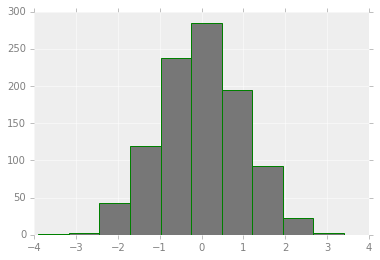
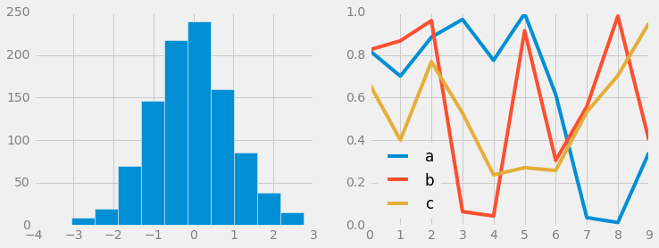

9. 配置文件和样式表¶
Matplotlib允许手动调整默认样式，如果默认拍照不能满足的情况下，可以手动调整样式。
而对于样式表，每个程序都有一套完整的配色方案，我们可以对起进行修改或者替换，系统给我们提供了很多固定风格的 搭配，如果需要，不建议过多修改配置内容，必要的时候直接替换样式表就好，必要的时候做一些微小改动即可满足需求。
9.1. 手动配置图形¶
通过手动配置图形，可以改变图形的刻度，背景等内容，下面例子是对图形配置的一个简单示例。
#设置环境
import matplotlib.pyplot as plt
import numpy as np
plt.style.use('classic')
%matplotlib inline
#使用默认配置显示图形
x = np.random.randn(1000)
plt.hist(x)
(array([ 1., 3., 43., 119., 237., 285., 195., 92., 22., 3.]),
array([-3.90095153, -3.1706347 , -2.44031787, -1.71000103, -0.9796842 ,
-0.24936737, 0.48094946, 1.2112663 , 1.94158313, 2.67189996,
3.40221679]),
<a list of 10 Patch objects>)

# 对图形进行各种配置
ax = plt.axes()
ax.set_axisbelow(True)
#被色网格线
plt.grid(color='g', linestyle='solid')
#隐藏坐标的线条
for spine in ax.spines.values():
spine.set_visible(False)
#隐藏上边和右边的刻度
ax.xaxis.tick_bottom()
ax.yaxis.tick_left()
#弱化刻度和标签
ax.tick_params(colors='green', direction='out')
for tick in ax.get_xticklabels():
tick.set_color('orange')
for tick in ax.get_yticklabels():
tick.set_color('orange')
#设置频次直方图轮廓色和填充色
ax.hist(x, edgecolor="#1122FF", color='#998877')
(array([ 1., 3., 43., 119., 237., 285., 195., 92., 22., 3.]),
array([-3.90095153, -3.1706347 , -2.44031787, -1.71000103, -0.9796842 ,
-0.24936737, 0.48094946, 1.2112663 , 1.94158313, 2.67189996,
3.40221679]),
<a list of 10 Patch objects>)
9.2. 修改默认配置¶
默认配置在修改的时候需要先把系统默认配置保存，使用完毕后需要还原配置。
#保存默认的配置，修改后需要还原
rc_default = plt.rcParams.copy()
from matplotlib import cycler
colors = cycler('color', ['#777777', '#888888', '#999999', '#AAAAAA', '#BBBBBB', '#CCCCCC'])
plt.rc('axes', facecolor='#EEEEEE', edgecolor='none', \
axisbelow=True, grid=True, prop_cycle=colors)
plt.rc('grid', color='w', linestyle='solid')
plt.rc('xtick', direction='out', color='gray')
plt.rc('ytick', direction='out', color='gray')
plt.rc('patch', edgecolor='green')
plt.rc('lines', linewidth=2)
plt.hist(x)
(array([ 1., 3., 43., 119., 237., 285., 195., 92., 22., 3.]),
array([-3.90095153, -3.1706347 , -2.44031787, -1.71000103, -0.9796842 ,
-0.24936737, 0.48094946, 1.2112663 , 1.94158313, 2.67189996,
3.40221679]),
<a list of 10 Patch objects>)

for i in range(4):
plt.plot(np.random.rand(10))
plt.rcParams.update(rc_default)

9.3. 样式表¶
样式表就是系统给提供的完整配置方案。
在style模块里，包含大量样式表可以使用。
使用plt.style.available可以得到所有可用的样式：
['seaborn-dark', 'tableau-colorblind10', 'fivethirtyeight', 'seaborn-white', 'seaborn-bright', 'seaborn-deep', 'ggplot', 'Solarize_Light2', 'seaborn-colorblind', 'seaborn-darkgrid', 'seaborn-pastel', 'seaborn', 'seaborn-talk', '_classic_test', 'seaborn-notebook', 'dark_background', 'fast', 'seaborn-dark-palette', 'classic', 'grayscale', 'seaborn-poster', 'bmh', 'seaborn-ticks', 'seaborn-whitegrid', 'seaborn-paper', 'seaborn-muted']
对样式的使用，可以使用代码plt.style.use('stylename')来处理。但这个会改变以后所有的风格，如果需要，建议使用风格上下文管理器来临时更换：
plt.style.context('stylename')
通过风格上下文管理器，我们可以临时更换配置方案而不必操心还原等操作，一旦离开上下文管理器的作用范围，则临时上下文管理器就失效。
# 准备数据
def hist_and_lines():
np.random.seed(0)
fig, ax = plt.subplots(1,2,figsize=(11,4))
ax[0].hist(np.random.randn(1000))
for i in range(3):
ax[1].plot(np.random.rand(10))
ax[1].legend(['a', 'b', 'c'], loc='lower left')

9.3.2. FiveThirtyEight风格¶
这个风格是模仿网站FiveThirtyEight。
http://fivethirtyeight.com
with plt.style.context('fivethirtyeight'):
hist_and_lines()

9.3.3. ggplot风格¶
ggplot是R语言非常流行的可视化工具，ggplot风格就是模仿ggplot工具包。
with plt.style.context('ggplot'):
hist_and_lines()